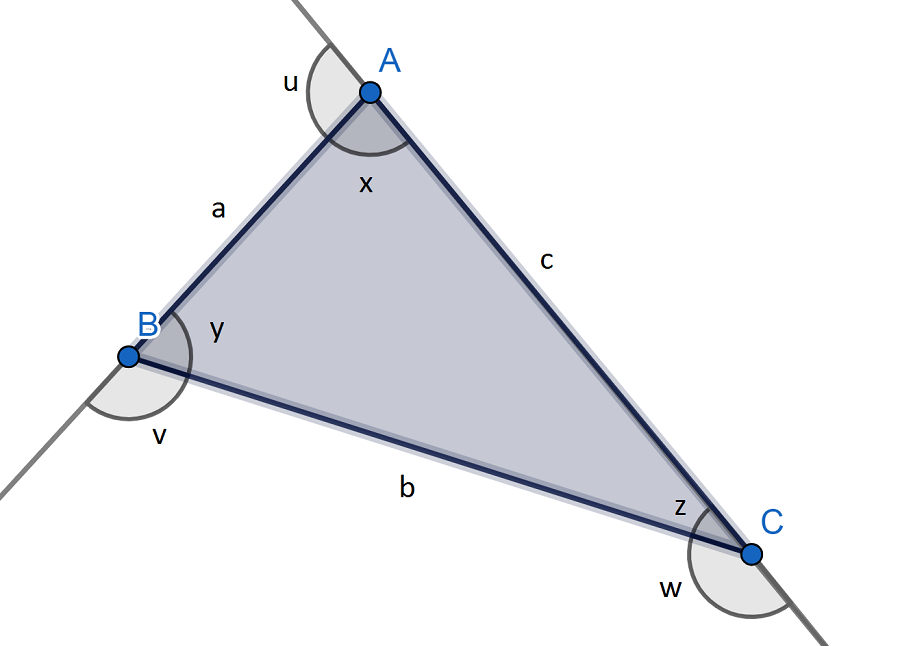

El triángulo escaleno es aquella figura geométrica de tres lados, cada uno de los cuales mide una longitud distinta.
Este tipo de polígono es un caso particular dentro de los tipos de triángulo según la longitud de sus lados.
Cabe recordar que un polígono es una figura geométrica bidimensional que se constituye de la unión de distintos puntos (que no formen parte de la misma línea) mediante segmentos de recta. De ese modo, se construye un espacio cerrado.
Otro punto para tomar en cuenta que este tipo de triángulo se consideraría todo lo contrario a un polígono regular, que es aquel cuyos lados miden lo mismo.
Vértices: A, B, C.
Lados: AB, BC, AC, cada uno de los cuales miden, a, b y c, respectivamente.
Ángulos interiores: x, y, z. Se cumple, como en todo triángulo, que suman 180º.
Ángulos exteriores: u, v, w Cada uno es suplementario al ángulo interior del mismo lado. Es decir, se cumple que: 180º = u + x = y + v = w + z

Área(A): Área(A): En este caso, nos basamos en la fórmula de Herón donde s es el semiperímetro. Es decir, P/2.
Perímetro(P): Sumamos los lados. P = a + b + c